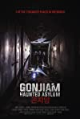
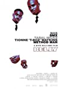

Top 5 Movies
-
- Released: 1998
- Director: John Frankenheimer
- Rated: R
- Runtime: 2h:24min
- Plot: A freelancing former U.S. Intelligence Agent tries to track down a mysterious package that is
wanted by the Irish and the Russians.
-

- Released: 2018
- Director: Beom-sik Jeong
- Rated: R
- Runtime: 1h:35min
- Plot: The crew of a horror web series travels to an abandoned asylum for a live broadcast. It soon
encounters much more than expected as it moves deeper inside the nightmarish old building.
-

- Released: 2006
- Director: Gabriele Muccino
- Rated: PG-13
- Runtime: 1h:57min
- Plot: A struggling salesman takes custody of his son as he's poised to begin a life-changing
professional career.
-

- Released: 1998
- Director: Hype Williams
- Rated: R
- Runtime: 1h:36min
- Plot: Two young friends involved in organized crime and drug dealing find that their priorities
differ.
-

- Released: 2004
- Director: Takashi Shimizu
- Rated: R
- Runtime: 1h:31min
- An American nurse living and working in Tokyo is exposed to a mysterious supernatural curse, one
that
locks a person in a powerful rage before claiming their life and spreading to another victim.